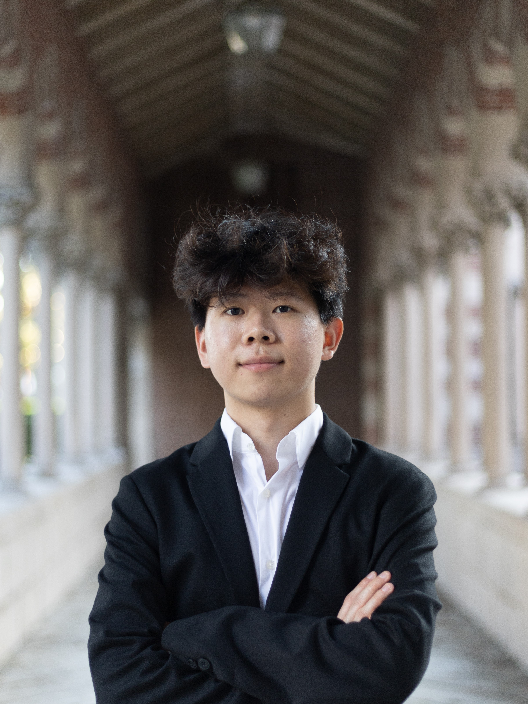

Aloha! I'm from Hawaii and China. I was born in China and lived there for a couple of years and then I moved to Hawaii. I enjoy playing League in my free time, the game's combination of strategy, teamwork, and adaptability is what makes it so appealing to me. I am also a part of the JV esports team at USC, where I get to put my skills and strategies to the test against other schools. Participating in esports has allowed me to take my love for this game to a whole new level. It's also a great opportunity to showcase my talents and to build camaraderie with my teammates. I'm also a big foodie and my favorite food is Sushi and hot pot.